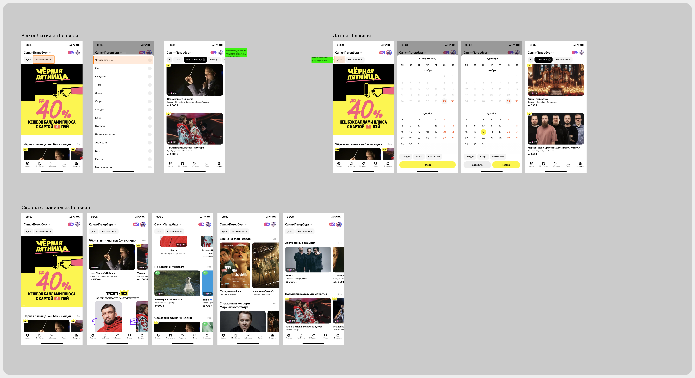
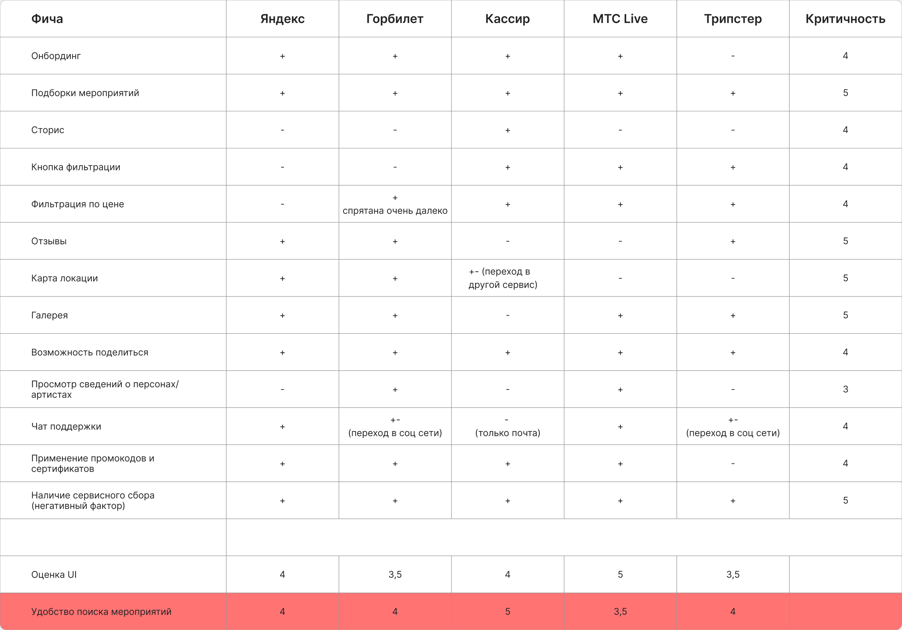

Проанализированы 5 сервисов: Яндекс Афиша, Горбилет, Кассир.ру, МТС Live и Трипстер (косвенный конкурент — экскурсии и туры). Для каждого разобраны первый запуск, главная, поиск, страница мероприятия, избранное, билеты и профиль. Критичность функции для пользователя оценена по 5-балльной шкале.
| Функция | Яндекс | Горбилет | Кассир | МТС Live | Трипстер | Критичность |
|---|---|---|---|---|---|---|
| Онбординг | + | + | + | + | − | 4 |
| Подборки мероприятий | + | + | + | + | + | 5 |
| Сторис | − | − | + | − | − | 4 |
| Кнопка фильтрации | − | − | + | + | + | 4 |
| Фильтр по цене | − | ± спрятан | + | + | + | 4 |
| Отзывы | + | + | − | − | + | 5 |
| Карта локации | + | + | ± в другом сервисе | − | − | 5 |
| Галерея | + | + | − | + | + | 5 |
| Поделиться | + | + | + | + | + | 4 |
| Страницы артистов | − | + | − | + | − | 3 |
| Чат поддержки | + | ± соцсети | − только почта | + | ± соцсети | 4 |
| Промокоды и сертификаты | + | + | + | + | − | 4 |
| Сервисный сбор (негатив) | + | + | + | + | + | 5 |
| Оценка UI | 4 | 3,5 | 4 | 5 | 3,5 | |
| Удобство поиска | 4 | 4 | 5 | 3,5 | 4 |
Выводы
- Позиционирование. Трипстер сфокусирован на смежных областях (экскурсии, туры) и скорее косвенный конкурент. Прямые — Яндекс Афиша, Кассир.ру, МТС Live, Горбилет.
- UX и визуал. МТС Live — современный и чистый интерфейс, Кассир.ру — эффективная навигация, Яндекс Афиша — интеграция с экосистемой и персонализация.
- Поиск и покупка сильнее всего у Кассир.ру: скорость и релевантность поиска, минимум шагов до оплаты.
- Оплата и выбор мест лучше у Кассира и Горбилета: наглядная схема зала, прозрачная оплата, легко изменить количество билетов.
Что берём в продукт
- Визуальный подход МТС Live, Кассира и Яндекс Афиши — чистый и лаконичный интерфейс
- Логику поиска и покупки Кассир.ру — быструю и прямую
- Оплату и выбор мест как у Горбилета и Кассира
Незанятая ниша: никто из конкурентов не помогает спланировать время вокруг события. Сервисный сбор есть у всех — прозрачная подача цены станет преимуществом.
Как проводился разбор
Каждый сервис я проходил по экранам и собирал сценарии на доске с подписями вида «Дата из Главная». Ниже — фрагмент разбора главной Яндекс Афиши.

Исходная таблица фич из Figma
